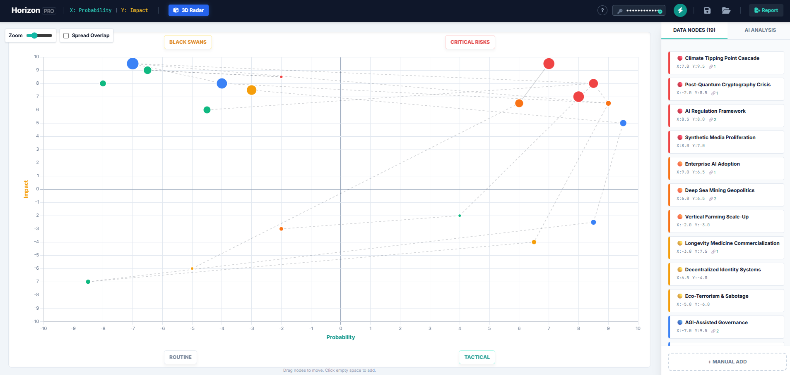

Module 1: The Core Philosophy
Horizon Scanning is not about predicting the future. Instead, it is the systematic detection of early warning signs—often called "weak signals"—to help organizations prepare for multiple possible futures.
"The future is not a destination, but a direction."
- The Shift: Move from "fire-fighting" (reacting to disruption) to "fire-proofing" (anticipating disruption).
- The Goal: It is better to be vaguely right than precisely wrong. We scan to identify threats before they become obvious.
- Key Concept: Trends start as outliers (edges of the matrix) before moving to the center (mainstream).
Module 3: The STEEP Framework
To ensure your scanning is holistic and doesn't suffer from "tunnel vision", use the STEEP framework when adding new nodes.
S - Social: Demographics, lifestyle shifts, cultural changes.
T - Technological: R&D, digital adoption, automation.
E - Economic: Markets, inflation, labor shifts.
E - Environmental: Climate, resources, sustainability.
P - Political: Government policy, geopolitics, regulations.
Module 4: The 6 Analytical Matrices
Choosing the right template determines the strategic output of your session. Below is the platform interface where you select your baseline strategy.

[Image: thum/LP.png not found]Initial Setup: Selecting Matrix Templates
- Impact vs. Probability (Risk Matrix): For traditional risk management. Spot Critical Risks and Black Swans.
- Impact vs. Uncertainty (Foresight Matrix): The most strategic view for Scenario Planning. Identifies "Future Scenarios" vs "Planning Realities".
- Urgency vs. Importance (Priority Matrix): Action Planning (Eisenhower Matrix).
- Influence vs. Interest (Stakeholder Mapping): Managing actors in an ecosystem.
- Novelty vs. Maturity (Innovation Radar): Technology tracking and R&D portfolio management.
- Time Horizon vs. Impact: Roadmap alignment.